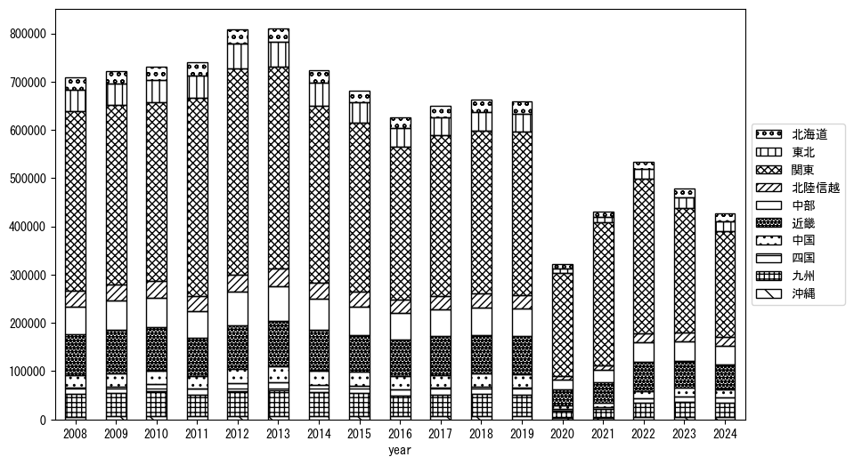
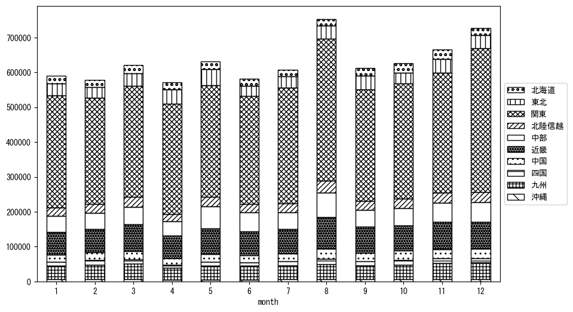

-
トップ
-
東京都
東京都
１．延べ宿泊者（総数）の推移
時系列グラフ
図１：東京都内の従業員数100人以上の宿泊施設での延べ宿泊者数（国外、居住地不詳を含む総数）。
基本統計量
表１：従業員数100人以上の宿泊施設での延べ宿泊者の総数（国外、および居住地不詳を含む）に関する基本統計量。単位は人泊。平均は１か月あたりの平均値を表す。図１に対応。
| 2008年 |
1,104,259 |
105,315 |
891,975 (1月) |
1,284,966 (8月) |
| 2009年 |
1,101,058 |
105,063 |
933,895 (2月) |
1,308,190 (8月) |
| 2010年 |
1,142,668 |
78,247 |
1,014,747 (9月) |
1,294,517 (3月) |
| 2011年 |
997,131 |
191,110 |
614,573 (4月) |
1,239,499 (12月) |
| 2012年 |
1,167,334 |
75,032 |
1,045,454 (2月) |
1,307,857 (8月) |
| 2013年 |
1,251,400 |
125,575 |
1,021,483 (1月) |
1,489,654 (8月) |
| 2014年 |
1,239,034 |
120,886 |
1,019,930 (1月) |
1,418,130 (8月) |
| 2015年 |
1,283,541 |
79,778 |
1,159,636 (1月) |
1,408,475 (8月) |
| 2016年 |
1,251,156 |
90,635 |
1,131,519 (11月) |
1,393,870 (4月) |
| 2017年 |
1,334,796 |
148,581 |
1,076,108 (2月) |
1,542,464 (4月) |
| 2018年 |
1,384,369 |
128,961 |
1,151,868 (2月) |
1,549,889 (8月) |
| 2019年 |
1,430,846 |
134,826 |
1,240,310 (1月) |
1,642,131 (4月) |
| 2020年 |
444,614 |
366,519 |
77,555 (5月) |
1,390,801 (1月) |
| 2021年 |
498,513 |
170,737 |
284,605 (1月) |
840,300 (12月) |
| 2022年 |
723,673 |
228,848 |
468,429 (2月) |
1,286,530 (12月) |
| 2023年 |
1,186,212 |
173,748 |
913,316 (2月) |
1,439,243 (12月) |
２．宿泊者数の重心（年平均の推移）
図２：東京都内の従業員数100人以上の宿泊施設での延べ宿泊者数（国外、居住地不詳を除く）の重心（年平均の推移）。
全画面表示
重心の前年平均からの移動距離と方位、および緯度・経度
表２：重心の前年平均からの移動距離と方位、および緯度・経度。図２に対応。
| 2008年 |
— |
— |
35.7516 |
137.9133 |
| 2009年 |
西南西 |
3.7km |
35.7389 |
137.8752 |
| 2010年 |
西 |
4.3km |
35.7449 |
137.8285 |
| 2011年 |
東 |
21.9km |
35.7663 |
138.0688 |
| 2012年 |
西 |
11.0km |
35.7632 |
137.9469 |
| 2013年 |
西南西 |
8.4km |
35.7279 |
137.8644 |
| 2014年 |
西北西 |
4.0km |
35.7350 |
137.8213 |
| 2015年 |
南南西 |
2.0km |
35.7191 |
137.8102 |
| 2016年 |
南西 |
3.3km |
35.7028 |
137.7802 |
| 2017年 |
南南西 |
2.0km |
35.6851 |
137.7737 |
| 2018年 |
北北東 |
3.6km |
35.7167 |
137.7815 |
| 2019年 |
南東 |
2.1km |
35.7022 |
137.7959 |
| 2020年 |
東 |
64.0km |
35.6390 |
138.4981 |
| 2021年 |
南南西 |
3.2km |
35.6130 |
138.4819 |
| 2022年 |
西 |
34.1km |
35.6254 |
138.1056 |
| 2023年 |
西 |
22.7km |
35.6613 |
137.8589 |
運輸局別延べ宿泊者数
時系列（年平均）

図３：東京都内の従業員数100人以上の宿泊施設での１か月あたり平均延べ宿泊者数（国外、居住地不詳を除く）の運輸局別内訳。
寄与度（前年からの変化率に対する）
 図４：東京都内の従業員数100人以上の宿泊施設での運輸局別延べ宿泊者数（国外、居住地不詳を除く）から求めた寄与度。
図４：東京都内の従業員数100人以上の宿泊施設での運輸局別延べ宿泊者数（国外、居住地不詳を除く）から求めた寄与度。
３．宿泊者数の重心（月別）
図５：東京都内の従業員数100人以上の宿泊施設での延べ宿泊者数（国外、居住地不詳を除く）の重心（月別）。観測期間は2008年1月から2023年12月まで。
全画面表示
全期間（2008年1月～2023年12月）の平均と月別平均の比較
表３：全期間の平均から月別平均までの移動距離と方位、および緯度・経度。図５に対応。
| 全期間 |
— |
— |
35.7058 |
137.9503 |
| 1月 |
東北東 |
5.3km |
35.7315 |
137.9998 |
| 2月 |
西南西 |
10.7km |
35.6791 |
137.8363 |
| 3月 |
西 |
10.3km |
35.7064 |
137.8363 |
| 4月 |
東北東 |
19.2km |
35.7801 |
138.1416 |
| 5月 |
北東 |
10.1km |
35.7684 |
138.0306 |
| 6月 |
南南西 |
3.1km |
35.6801 |
137.9360 |
| 7月 |
南 |
4.3km |
35.6671 |
137.9544 |
| 8月 |
南南東 |
8.8km |
35.6369 |
137.9981 |
| 9月 |
北西 |
2.4km |
35.7236 |
137.9354 |
| 10月 |
西 |
7.2km |
35.7148 |
137.8716 |
| 11月 |
西北西 |
8.9km |
35.7346 |
137.8581 |
| 12月 |
南東 |
8.2km |
35.6468 |
138.0053 |
運輸局別延べ宿泊者数
月別平均（2008年1月～2023年12月）

図６：東京都内の従業員数100人以上の宿泊施設での延べ宿泊者数（国外、居住地不詳を除く）の運輸局別内訳（月別）。
寄与度（全期間の平均から月別平均への変化率に対する）
図７：東京都内の従業員数100人以上の宿泊施設での運輸局別延べ宿泊者数（国外、居住地不詳を除く）から求めた寄与度（月別）。
４．データのダウンロード
出典：観光庁「宿泊旅行統計調査」に収録された「施設所在地、居住地別延べ宿泊者数（従業員数100人以上の施設）」
国土地理院「白地図（地理院タイル）」（図２と図５）